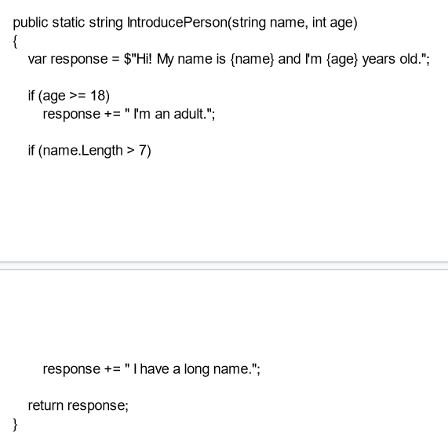
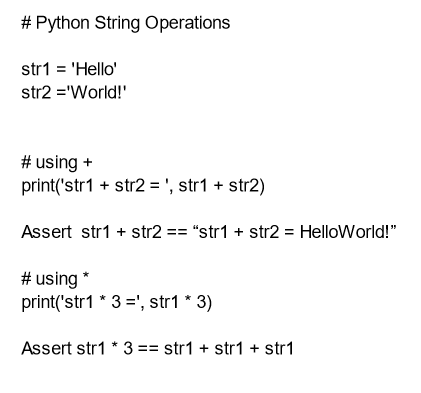

Cyclomatic complexity
Cyclomatic complexity is not a good indicator for the complexity of code. This is because the computer processing unit (cpu) uses branch prediction to selectively load the instructions that are most likely to be needed.
When the cpu moves bits to the memory caches, it is more efficient if the data fits perfectly into the entire cache. This means fewer instructions, meaning better performance. So to more accurately measure the complexity of code, we must look at the conformability of the data to the caches, particularly the L1 cache.
Cyclomatic complexity is very relevant when writing object oriented code. The more if statements, the more variations in the values of your variables. This means that the inheritance tree becomes more complicated.
The below code has a cyclomatic complexity of 4

Below shows the use of assert:

_name = “Bugatti”